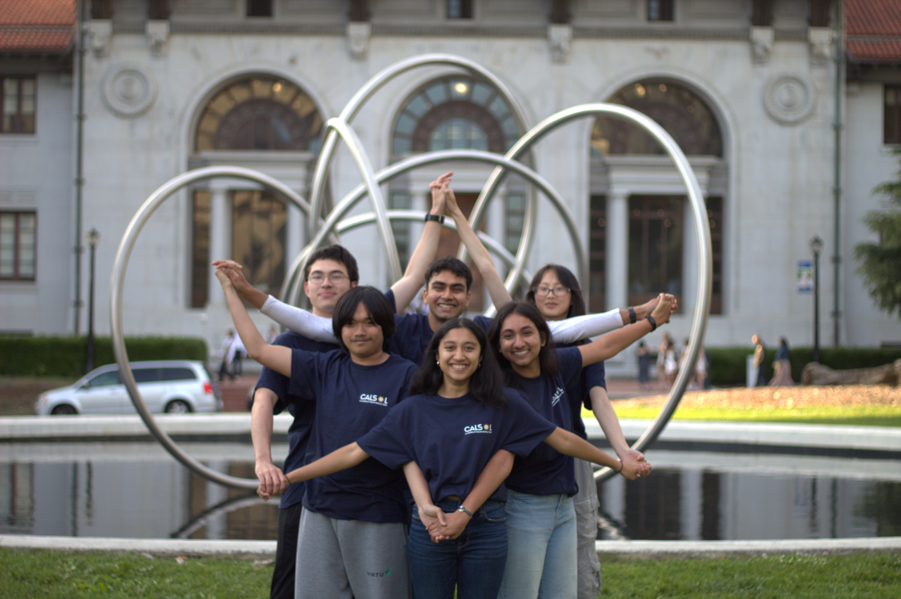
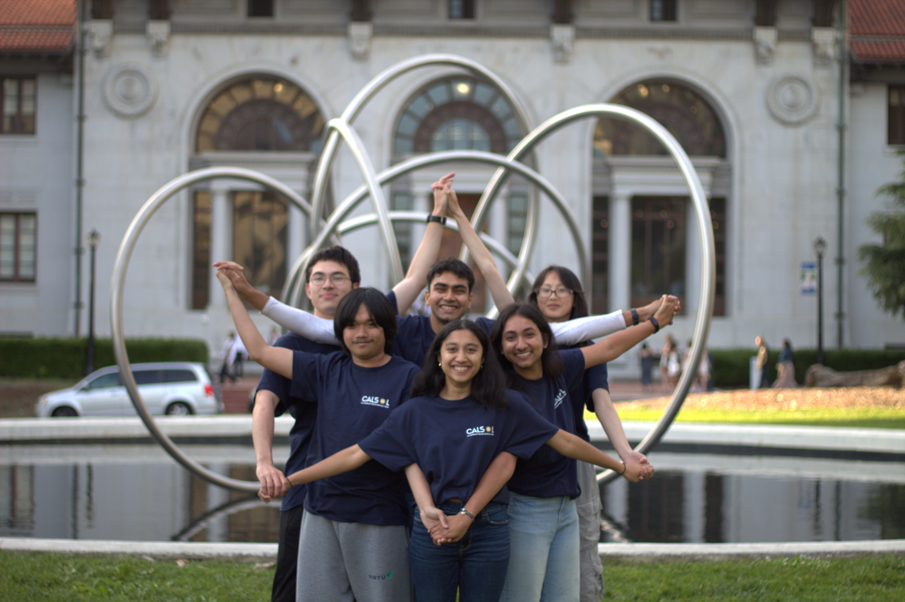

UC Berkeley Solar Vehicle Team

Overview
I helped build live dashboards that showed us exactly what our solar racecar was doing while it was on the track, so we could keep an eye on all the important stuff. My role was in architecting and programming out different sections of the system. Our team tested the system live on a racetrack and had great success with us getting a high resolution of data samples being processed, reaching close to 20 ms per datapoint at ranges of 300+ meters. I also helped build a data simulator to perform system stress tests and to do data analysis based on simulating past collected data.
Key Features
- Real Time Data Ingestion + graphing.
- Easily extensible system with quick analysis and alerts.
- Cross Platform and Sets up in less than 3min
Technologies Used
- Python, Asyncio, Socat, Pandas, Matplotlib, Serial
- Grafana, InfluxDB
- XBEE, Arduino
Gallery / Screenshots
 

Challenges & Learnings
Dealing with existing messy legacy uncommented (*sigh*) code written by people who are long gone was definitely a challenge. Making sure that the system is cross platform was a requirement that i had faced for the first time and allowed me to learn a lot about how different operating systems operate. I also discovered the need for threading and asyncronous IO operations. It allowed me to think about various methods to optimize the existing systems. I also applied data visualisation on real world data sets that were created by my own team!
PS: I also beacme a licensed radio operator